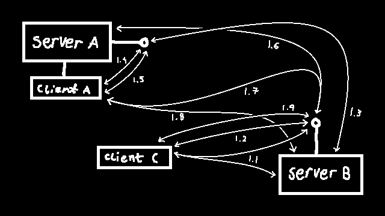

you have stumbled upon the specification and documentation for the llamechat standard, i hope you will be able to find your way around with the index of links below; they include all you need to know, from what llamechat is to everything you need to know to build your own implementation.
llamechat is an irc-like standard to provide federated communication. llamechat in itself, does not exist, it is a specification that servers are built around. it is federated which means every llamechat server can talk to eachother, so if you make an account on foo.com you can join channels on bar.net, and vice-versa.
json with id, also known as ijson for short, is a way to show ownership and events on top of the ubiquitous json format that was built specifically for llamechat and could be used by alike services. it consists of an @author, @intention, and @object. here is an example ijson event (a request to send a message in this case)
{
"@author": {
"id": "testuser", // username of the event's originator
"host": "example.com" // host/instance of the event's originator
},
"@intention": "create", // main type of event
"@object": {
"@type": "message", // sub-type of event
// the rest of @object is just info about the event
"channel": "testchannel",
"content": "Hello, World! :)
}
}
the @intention, as well as the @object's @type are not standardized, however, and it is llamechat's (or the ijson-using service's) responsibility to define them, and what non-@ fields @object should contain.
the antenna of a server serves as the main api endpoint that servers all functions, mainly pointing the requester to resources on the server or sending back full responses in ijson format
this directory should contain all sorts of media uploaded to the server, whether it is categorized is up to the implementation as long as the antenna points to the correct resources
a main landing page should be served for the root directory, although not required
a full featured web client to interact with the server and other llamechat servers, this could also serve as a dashboard. this is not required either
lets walk through the lifecycle of an action, in this case inviting a user to join a channel. essentially client C requests data from server B, client C then asks server B to invite a user from server A (who is online on client A) who accepts the request, after that client A requests data from server B like client C did at the beginning. (the data in this case would be messages from the channel, avatars of users in the channel, etc.)
